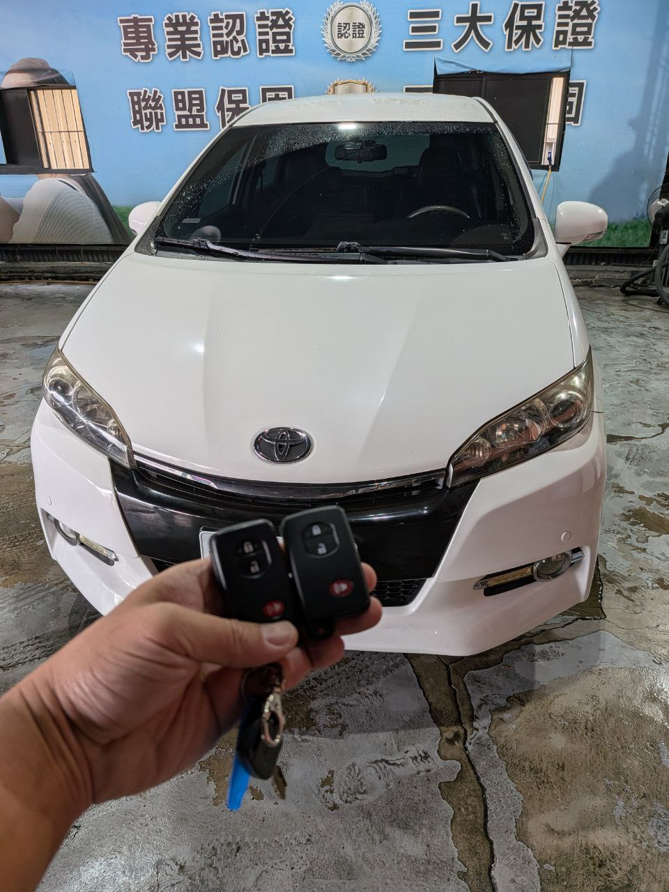

現場實拍：南投草屯 Toyota RAV4 智慧感應鑰匙全丟交車確認
在地深耕：為草屯車主提供即時支援
在南投草屯，一輛 Toyota RAV4 車主因意外遺失了唯一的智慧鑰匙。詢問時先提供車款年份、所在地、停放位置與現場照片，有助於快速判斷是否適合到場評估。
服務重點：車況確認與交車確認
Toyota RAV4 智慧鑰匙全丟時，會先確認車款年份、鑰匙狀態、停放條件與現場可核對資訊，再依車況安排服務方向。
- • 免除拖吊： 現場直接解除排檔鎖，原地恢復動力。
- • 完整功能： 包含 Smart Entry 感應開門與按鈕啟動。
- • 交車確認： 完成後確認新鑰匙基本使用狀態與車主後續需求。